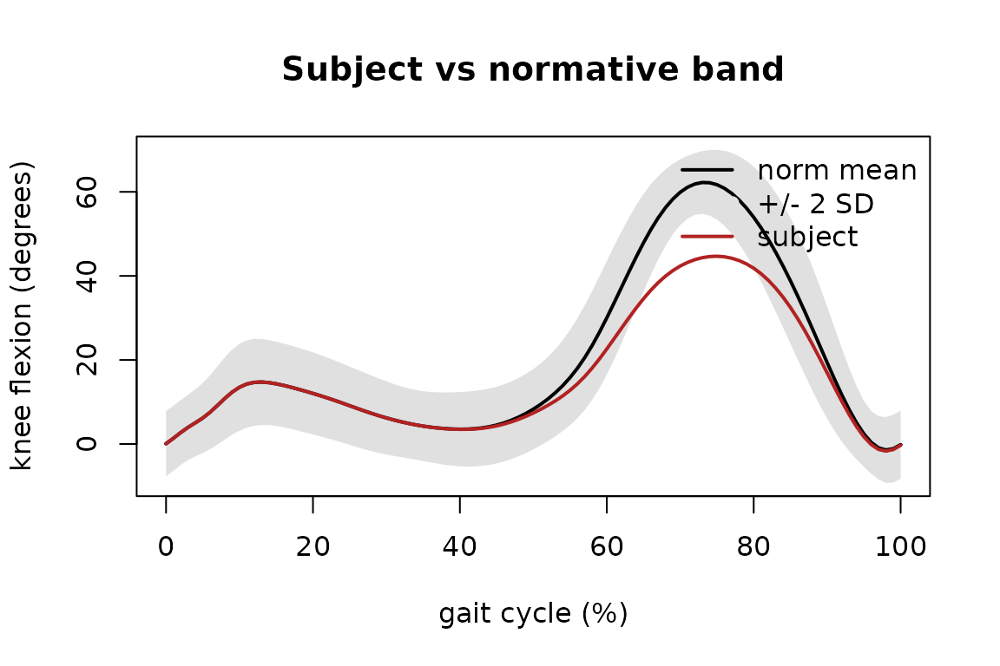

Comparing a subject against normative gait bands
Source:vignettes/PhysioGaitNorm.Rmd
PhysioGaitNorm.RmdPhysioGaitNorm bundles real normative gait reference data: mean and standard-deviation kinematic waveform bands over the gait cycle for the nine Gait Deviation Index / Gait Profile Score variables, derived from the public WBDS dataset (Fukuchi, Fukuchi & Duarte 2018; 24 young healthy adults, overground comfortable-speed walking). This vignette loads the bundled norms and compares a synthetic subject against them — everything runs offline from the installed package data.
library(PhysioGaitNorm)
#> PhysioGaitNorm v0.2.1 - normative gait reference databaseThe bundled datasets
listGaitNorms() returns the provenance / version
manifest.
listGaitNorms()[, c("dataset", "version", "population", "n_subjects", "speed")]
#> Normative gait datasets (1):loadGaitNorm() loads the mean/SD bands. Each is a
variables x cycle-points matrix (rows named by kinematic
variable, columns by cycle percentage).
norm <- loadGaitNorm("adult_reference", cycle = 101)
norm
#> <gait_norm>adult_referencev2.0.0
#> cycle length : 101 points
#> variables : 9 (pelvic_tilt, pelvic_obliquity, pelvic_rotation, hip_flexion, hip_adduction, hip_rotation, knee_flexion, ankle_dorsiflexion, foot_progression)
#> bands : mean/sd, 9 x 101
#> features : 24 x 459
#> population : healthy_adult_young (age 21-37, self_selected)
norm$variables
#> [1] "pelvic_tilt" "pelvic_obliquity" "pelvic_rotation"
#> [4] "hip_flexion" "hip_adduction" "hip_rotation"
#> [7] "knee_flexion" "ankle_dorsiflexion" "foot_progression"Comparing a synthetic subject to the knee-flexion band
We build a synthetic subject by taking the normative mean knee-flexion waveform and reducing its swing-phase peak — a “stiff-knee” pattern — then score each cycle point as a z-score against the normative mean and SD.
pct <- norm$percent
mu <- norm$mean["knee_flexion", ]
sdev <- norm$sd["knee_flexion", ]
# synthetic subject: normative mean minus a swing-phase bump (degrees)
subject <- mu - 18 * exp(-((pct - 72)^2) / (2 * 9^2))
z <- (subject - mu) / sdev
c(max_abs_z = round(max(abs(z)), 2),
at_percent = pct[which.max(abs(z))])
#> max_abs_z at_percent
#> 4.9 72.0The largest deviation falls in swing phase, as expected. A plot makes the subject’s departure from the normal band explicit.
plot(pct, mu, type = "l", lwd = 2, ylim = range(mu - 2 * sdev, mu + 2 * sdev, subject),
xlab = "gait cycle (%)", ylab = sprintf("knee flexion (%s)", norm$units),
main = "Subject vs normative band")
polygon(c(pct, rev(pct)), c(mu + 2 * sdev, rev(mu - 2 * sdev)),
col = "grey88", border = NA)
lines(pct, mu, lwd = 2)
lines(pct, subject, col = "firebrick", lwd = 2)
legend("topright", c("norm mean", "+/- 2 SD", "subject"),
col = c("black", "grey88", "firebrick"), lwd = c(2, 8, 2), bty = "n")
Where next
The same norm$mean / norm$sd bands drive
the Gait Deviation Index and Gait Profile Score calculations elsewhere
in the ecosystem; the per-subject feature matrix
(loadGaitNorm(features = TRUE)$features) is the normative
population used to build the GDI basis. See ?loadGaitNorm
and the provenance manifest in listGaitNorms() for full
data lineage and citations.